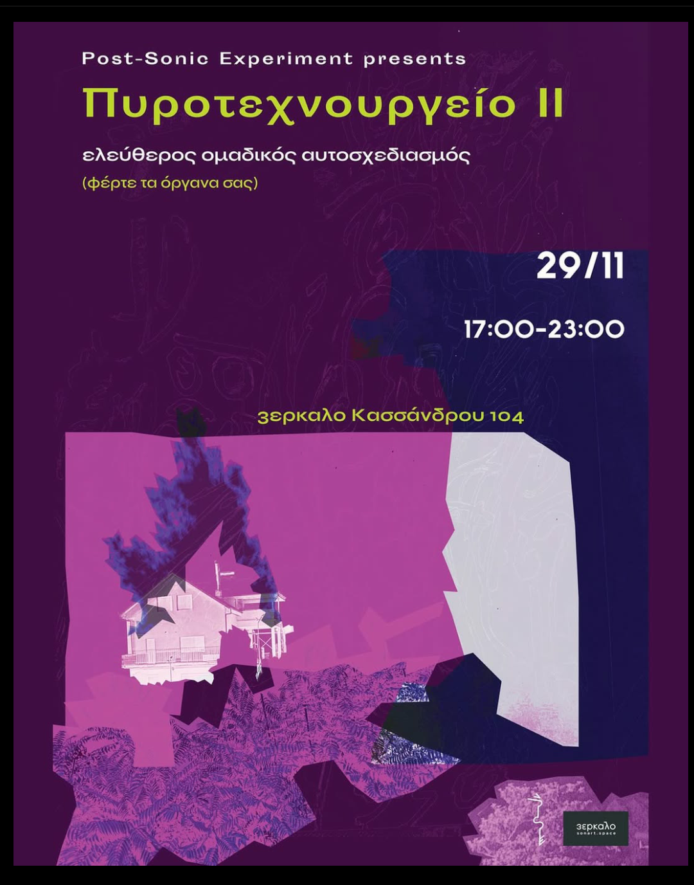
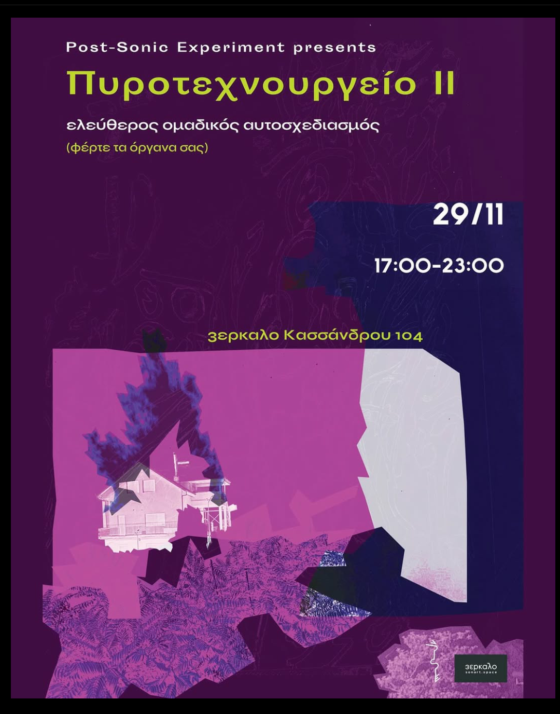
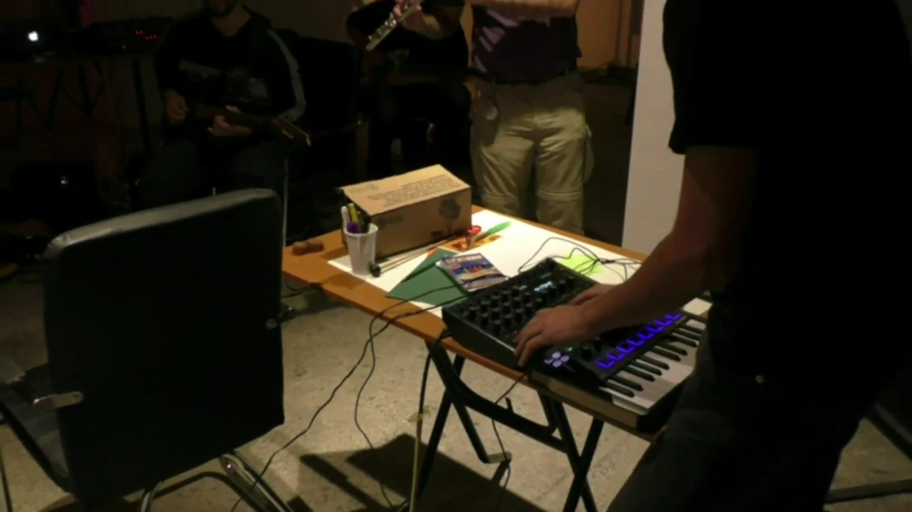
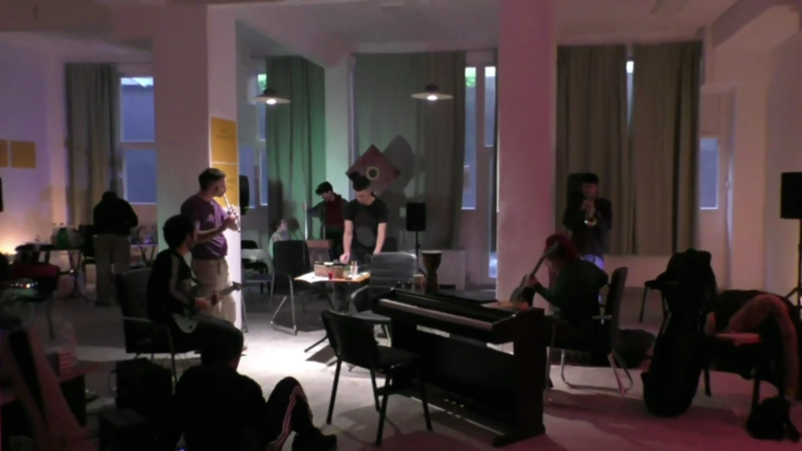
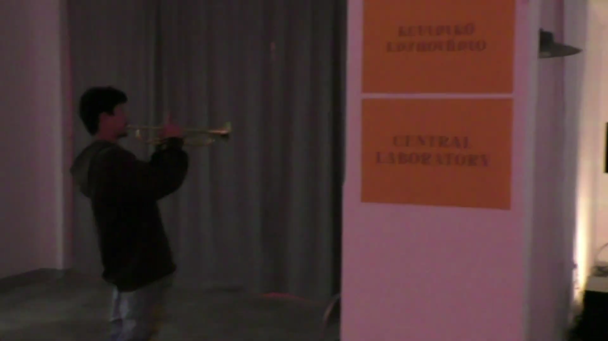
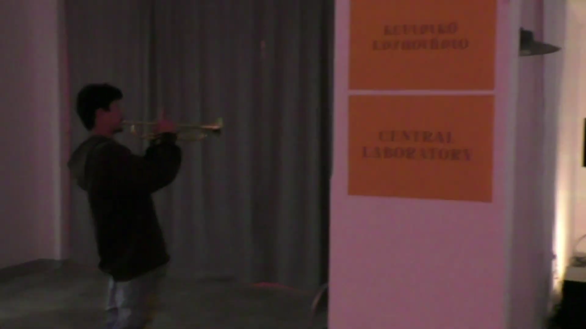

Πρώτη Μετάδοση - 87,1 FM
16/10/2025

Pharmacy, Marcel Duchamp

 

Η κολλεκτίβα Post-Sonic Experiment στοχεύει στη διάδοση και εξέλιξη της σύγχρονης μουσικής δημιουργίας που εκφράζεται
μέσα από το καλλιτεχνικό έργο νέων συνθετών και ευρύτερων μουσικών συνόλων. Η δραστηριότητα των Post-Sonic Experiment
στοχεύει στη διοργάνωση μουσικών εκδηλώσεων που περιστρέφονται γύρω από τον πολυδιάστατο άξονα της σύγχρονης κλασικής μουσικής,
όπως συναυλίες, open jams, αυτοσχεδιασμοί κ.λπ.


 

"Το Πυροτεχνουργείο προσκαλεί άπαντες ανεξαρτήτως δεξιότητας ή γνώσεων, σε έναν ελεύθερο ομαδικό αυτοσχεδιασμό
όπου το ύφος και το περιεχόμενο επανακαθορίζεται διαρκώς από τους συμμετέχοντες, πάντα με διάθεση για πειραματισμό
και ηχητική εξερεύνηση. Συμπράξτε με τα δικά σας όργανα ή περιεργαστείτε τα όργανα και τα αντικείμενα του χώρου
σε ένα πλαίσιο όπου ο διαχωρισμός μεταξύ ερμηνευτή και ακροατή εκλείπει - ως που οι δύο ρόλοι να ταυτίζονται -
και η μουσική πράξη ξεφεύγει από τα καλούπια του «σωστού» και του «εύηχου»."
... part 1

U.S Imperialism, Toy set 2026, digital poster.
... part 2